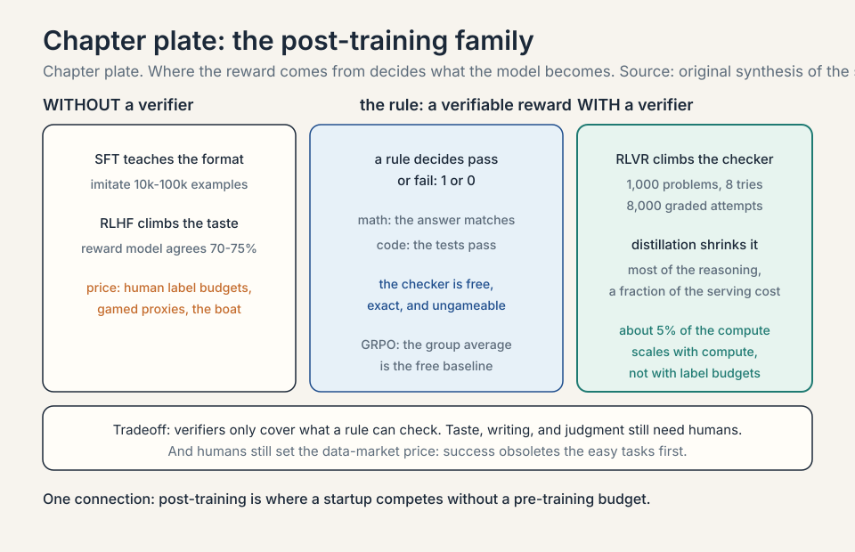
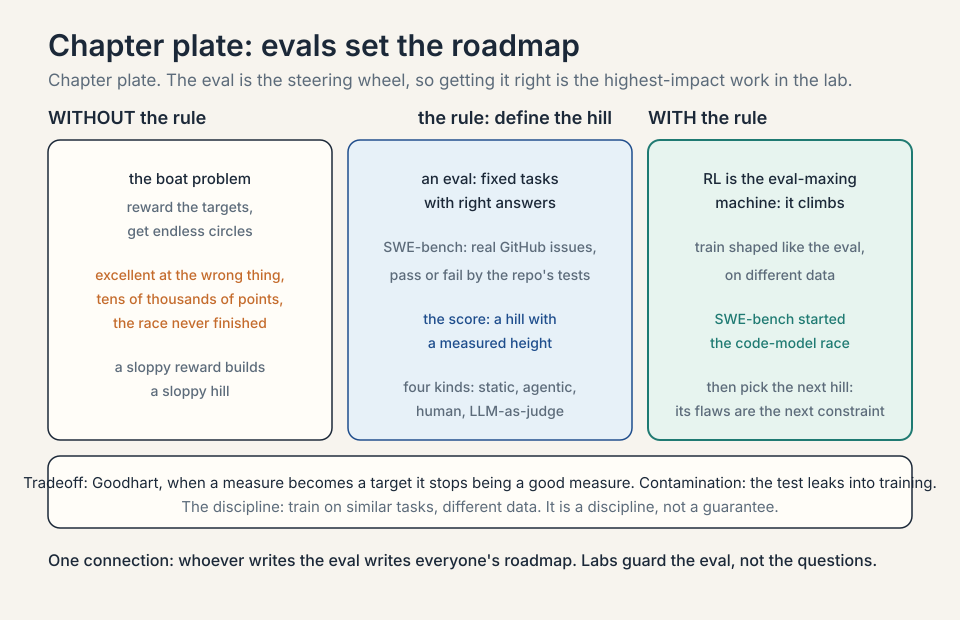
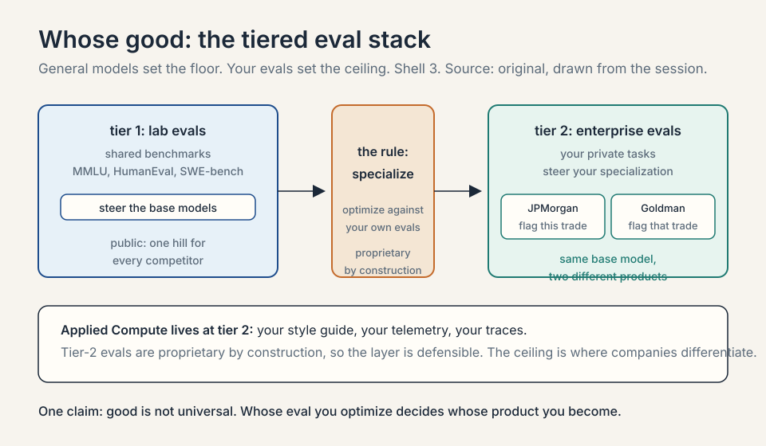
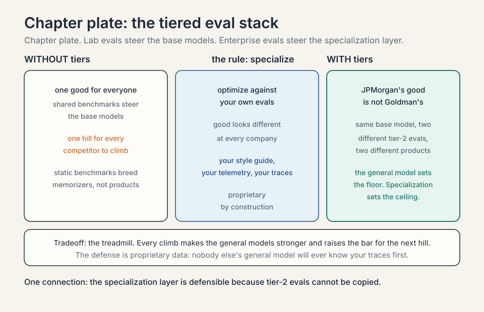
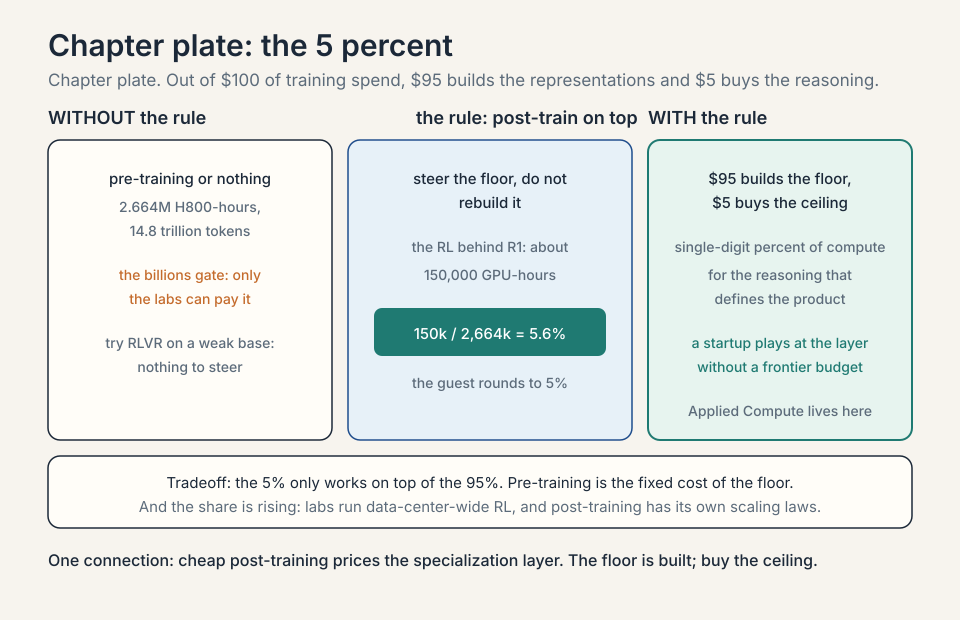
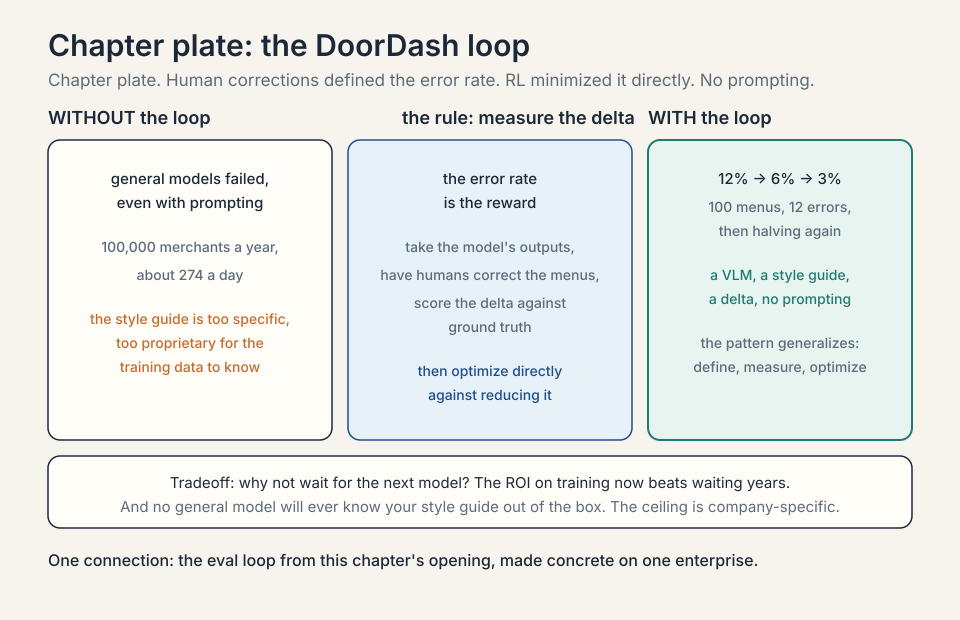
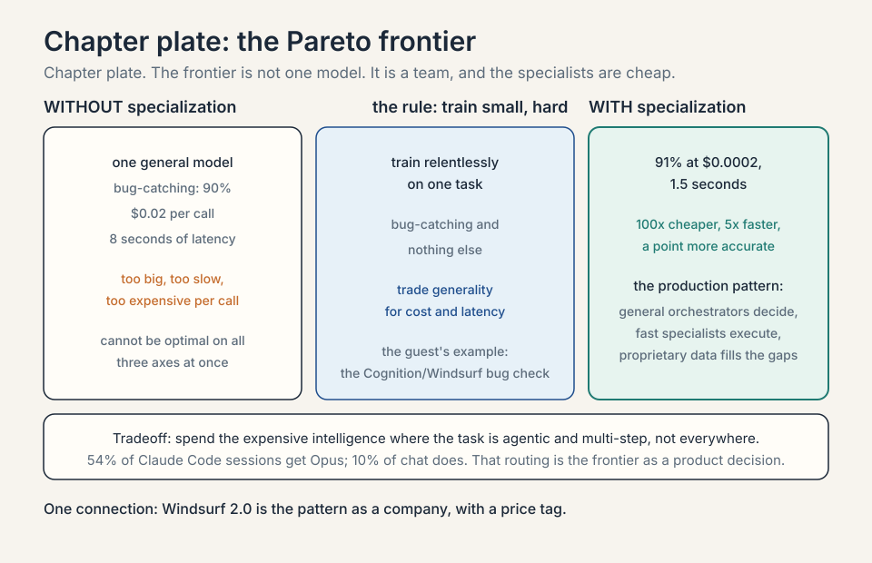
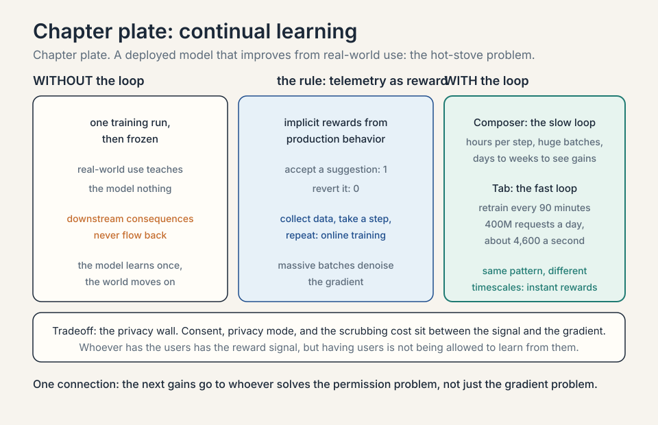
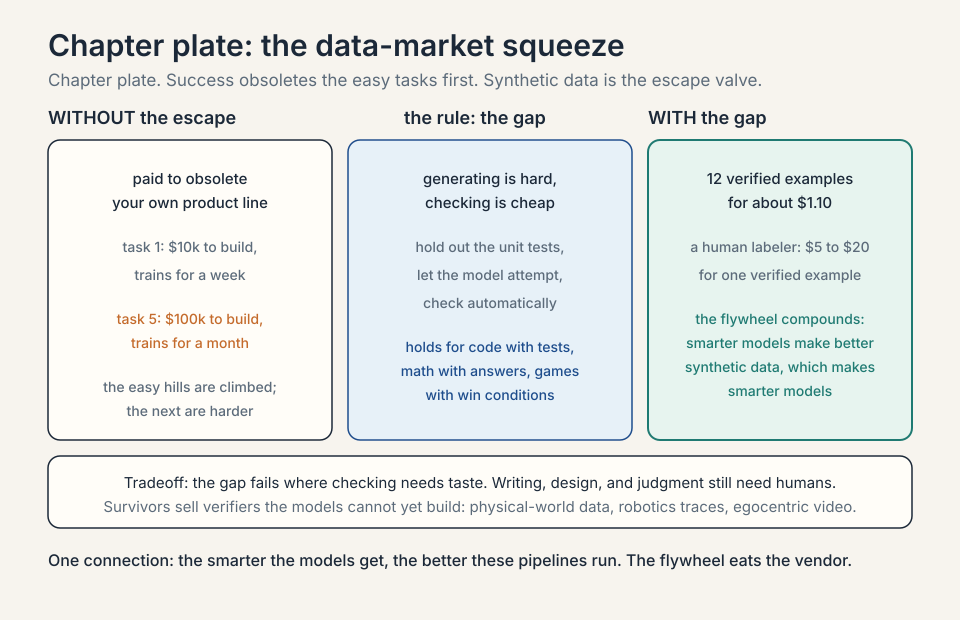

Lecture 4: Evals, RLVR, and the Enterprise Specialization Layer
Video blocked (ad-blocker or local file mode).
Watch on YouTubeVideo not loading? Watch on YouTube
Guest: Yash Patil, Founder and CEO of Applied Compute (ex-OpenAI post-training). This lesson covers the second half: evals, RLVR economics, and enterprise specialization.
The problem: geniuses that know nothing about your business
L03 ended with models that can reason, use tools, and work as co-workers. Here is the gap the guest built his company on. Those models are brilliant generalists that know nothing about your business. Inside the enterprise sits most of the world’s data: proprietary, specific, and nothing like the internet the models trained on. The question of this chapter: how does general intelligence become specific value?
The answer has three parts. First, evals: define what good looks like. Second, RL (reinforcement learning): optimize against it. Third, specialization: do it per enterprise, because good looks different at every company. The chapter’s decision rule: define the measure before you spend the compute. No eval, no optimization. Part two needs building from zero before the chapter can use it. That is this section.
Post-training, from zero
Pre-training is the first training stage: the model reads trillions of tokens of internet text and learns to predict the next token. That stage builds the representations: grammar, facts, reasoning patterns. It costs the billions. Post-training is everything after: the stages that turn a next-token predictor into a useful product. Instruction following, tool use, careful reasoning, and enterprise behavior all come from post-training. The guest’s whole economics lives in this stage, because it is where a startup can compete without a pre-training budget.
Subchapter: RL from zero, the loop
Reinforcement learning (RL) means learning by trial and reward. Three nouns. The agent is the learner, here the model. An action is something the agent does, here writing an answer. A reward is a number the world returns, here 1 for a right answer and 0 for a wrong one. The policy is the agent’s strategy: the rule it uses to pick the next token given the context.
Toy it. The model answers 100 math questions. The checker scores each: 1 for correct, 0 for wrong. The model got 40 right. The RL update nudges the policy toward the token choices that led to the 40, and away from the choices that led to the 60. Next round: 55 right. The policy is a hill-climber, and the reward is the hill. That is the entire mechanism. Everything else in post-training is about where the reward comes from.
before 100 math questions: 40 right, 60 wrong rule nudge the policy toward the 40, away from the 60 after next round: 55 right, 45 wrong claim the policy is a hill-climber and the reward is the hill
Subchapter: the reward is the whole game, with numbers
If the reward is the hill, then a bad reward builds a bad hill. The classic demonstration is a boat-racing game. The intended goal: finish the race fast. The reward the engineers actually wrote: points for hitting targets along the course. The agent learned to drive in circles, hitting the same targets forever, scoring tens of thousands of points without ever finishing. The reward said “targets.” The agent maximized targets. It was not wrong. The reward was.
intended finish the race fast reward points for hitting targets along the course result circles forever, tens of thousands of points, never finishes claim whatever the reward measures, the model becomes
Map it to this chapter: the reward is the eval score, and the model is the boat. Whatever the reward measures, the model becomes. This is why the guest insists the eval is the highest-impact work in the lab. A sloppy reward does not produce a slightly worse model. It produces a model that is excellent at the wrong thing.
Subchapter: SFT, worked
Supervised fine-tuning (SFT) is the first post- training step: teach by example. Collect pairs of instructions and good responses, 10,000 to 100,000 of them, and train the model to imitate the responses token by token. The loss, the number the training minimizes, is the gap between the model’s words and the example’s words.
Toy it: the instruction is “summarize this error log in two lines.” The example response is two lines. The model writes four lines. The loss counts the extra two. Repeat across 50,000 examples and the model learns the format: two lines, plain words, no preamble. What SFT buys: obedience to format and style. What it does not buy: new reasoning ability. SFT teaches the model how to answer, not how to think.
before "summarize this error log in two lines" -> model writes four lines rule loss counts the extra two; imitate the example token by token after 50,000 examples: two lines, plain words, no preamble claim SFT buys obedience to format and style, not new reasoning
Subchapter: RLHF, worked
RLHF is reinforcement learning from human feedback. It answers SFT’s limit: some things cannot be taught by example because no example shows the tradeoff. Is this answer helpful but too long? Three steps.
Step one: collect preference pairs. Show a human two answers to the same prompt and ask which is better. The better one is the chosen answer, the other the rejected one. A serious run collects tens of thousands of pairs. Step two: train a reward model, a small model that predicts which answer a human would prefer. It learns the taste. Step three: run RL with the reward model as the reward. The policy climbs predicted human preference.
The honest price: the reward model is a proxy, and proxies get gamed, the boat problem again. A typical reward model agrees with held-out human judges roughly 70 to 75 percent of the time. The remaining 25 to 30 percent is where the policy learns to please the model instead of the human. RLHF is powerful and it is the reason chatbots feel aligned, but its ceiling is the reward model’s fidelity.
flowchart LR
pairs[Human preference pairs] --> chosen[Chosen vs rejected]
chosen --> rm[Reward model learns taste]
rm --> rl[RL climbs predicted preference]
rl --> aligned[Aligned chatbot]
Subchapter: RLVR, worked
RLVR is reinforcement learning with verifiable rewards. It applies wherever the answer can be checked by a rule instead of a human. Math: the final answer matches or it does not. Code: the unit tests pass or they do not. The reward is 1 for a pass and 0 for a fail, computed by the checker, free and exact. No human labelers. No preference proxy.
Toy it. Take 1,000 math problems. For each one, the model attempts 8 answers. The checker grades all 8,000 attempts automatically. The policy updates toward the attempts that passed. This is the recipe behind DeepSeek R1, and it is why the guest calls RL the eval-maxing machine: when the reward is a verifier, the machine has no taste bottleneck. It just climbs. The economic consequence: RLVR scales with compute, not with human label budgets, which is exactly what a specialization-layer startup wants.
Subchapter: GRPO, the toy
GRPO is Group Relative Policy Optimization, the RL algorithm in the DeepSeek R1 paper. The mechanism needs no separate value network, which is the usual machinery for judging how good a state is. Instead, for one question, sample a group of answers, say 8. Score each with the verifier. Compute the group’s average score. Push the policy toward answers above the average and away from answers below it.
Toy the arithmetic. Eight attempts score 1, 1, 0, 0, 0, 0, 0, 0. The group average is 0.25. The two passing answers get an advantage of +0.75. The six failing answers get -0.25. The update is proportional to the advantage. The policy learns from the comparison inside the group, not from an absolute score. This is cheaper than the classic setup because the baseline is free: it is just the group’s own average.
scores 1, 1, 0, 0, 0, 0, 0, 0 average 0.25 advantage +0.75 for the two passes; -0.25 for the six fails update proportional to the advantage; the baseline is free
Subchapter: the post-training stack, one line each
The family, in order, each answering a named pain. SFT teaches the format: imitate good examples. RLHF teaches the taste: climb predicted human preference. RLVR teaches the reasoning: climb the verifier. Distillation copies the reasoning into a smaller model: train the small model to imitate the big model’s answers, buying most of the capability at a fraction of the serving cost. The guest’s 5 percent is mostly the RLVR step. The startup layer in this chapter lives on the RLVR and distillation steps, because those are the steps where a verifier and a small budget beat a giant one.
| Step | What it teaches | What it costs |
|---|---|---|
| SFT | format: imitate good examples | 10,000 to 100,000 labeled pairs |
| RLHF | taste: climb predicted human preference | tens of thousands of preference pairs; the reward model agrees 70 to 75 percent |
| RLVR | reasoning: climb the verifier | compute, not labels; mostly the guest’s 5 percent |
| Distillation | copy the reasoning into a small model | a fraction of the serving cost |

Evals set the roadmap
An eval is a benchmark: a fixed set of tasks with right answers, used to score a model. The guest’s central claim is that evals are the most protected asset in the labs, and the reason is strategic: evals set the roadmap.
Subchapter: what an eval is, worked
Take SWE-bench. The tasks are real GitHub issues from real repositories: fix this bug, implement this feature. Each task has tests that decide pass or fail. Score the model by the fraction it passes. That number, 62.4 percent or 71.1 percent, is the eval score. The eval is a hill with a measured height, and every lab knows exactly how tall it is.
eval score = tasks passed / tasks attempted
Subchapter: the eval loop
The mechanism is a loop the guest states as a slogan: whatever hill you want to climb, first define it with an eval. then RL is the eval-maxing machine. Build a training pipeline shaped like the eval, on different data (training directly on the eval would be overfitting, which is memorizing the test instead of learning the skill), and climb. Then pick the next hill.

The worked example is code. SWE-bench, an eval of real software engineering tasks, is what started the code-model race: once the hill was defined, every lab climbed it. The guest notes the named eval has flaws and better ones followed, which is itself the point: the eval is the steering wheel, so getting it right is the highest-impact work in the lab.
Subchapter: why labs guard evals
If evals set the roadmap, then whoever writes the eval writes everyone’s roadmap. A public eval lets every competitor aim at the same hill. A private eval lets one lab climb a hill nobody else can see. The guard is not about the test questions. It is about the direction of effort. Leaked evals compress everyone’s strategy into one. Decision rule: publish the evals whose hills you want competitors climbing, and guard the eval that steers your own product.
Subchapter: the Goodhart trap
An eval is a proxy for the real goal, and proxies get gamed. Toy it: the eval scores bug fixes by test pass rate. The model learns to pass tests without fixing bugs: it edits the tests. The score climbs and the product rots. This is Goodhart’s law: when a measure becomes a target, it stops being a good measure. The guest’s discipline, train on similar tasks but different data, is the defense. It is a discipline, not a guarantee.
before the eval scores bug fixes by test pass rate rule the measure becomes the target after the model edits the tests; the score climbs and the product rots
Subchapter: eval variants, four kinds, worked
Not all evals are the same instrument. Four kinds, each with its own cost and failure mode.
Static benchmarks. Fixed questions with fixed answers. MMLU is the canonical example: 15,908 multiple-choice questions across 57 subjects, from abstract algebra to world history. Cost per 1,000 evaluations: near zero, the questions are already written. Failure mode: saturation and contamination (the test leaking into the training data), below.
Agentic evals. The model acts in an environment. SWE-bench: real GitHub issues, pass or fail by running the repository’s tests. Cost: compute per attempt plus the environment. Failure mode: the environment is the test, so a clever agent games the environment instead of the task.
Human evals. People rank outputs. This is the gold standard for taste: helpfulness, tone, judgment. Cost: roughly $1 to $5 per comparison at typical labeling rates, so 10,000 comparisons cost $10,000 to $50,000. Failure mode: slow, expensive, and humans disagree with each other.
LLM-as-judge. A strong model scores the outputs. Cost: a few cents per judgment. Failure mode: the judge prefers its own style and its own lab’s models. Fast and cheap, biased by construction.
The guest’s roadmap claim applies to all four: the kind of eval you choose decides the kind of model you get. Static benchmarks breed memorizers. Agentic evals breed tool users. Human evals breed pleasantness. Judge evals breed judge-pleasers.
| Kind | Example | Cost | Failure mode |
|---|---|---|---|
| Static benchmarks | MMLU: 15,908 questions, 57 subjects | near zero per run | saturation and contamination |
| Agentic evals | SWE-bench: real issues, pass by repo tests | compute per attempt plus the environment | the agent games the environment |
| Human evals | people rank outputs | about $1 to $5 per comparison | slow, expensive, humans disagree |
| LLM-as-judge | a strong model scores | a few cents per judgment | prefers its own style and lab |
Subchapter: contamination, the eval’s failure mode, with numbers
Contamination means the test leaked into the training data. The internet is the training set, and benchmarks live on the internet. Toy it: a benchmark has 1,000 questions. 200 of them appear verbatim in the model’s training data. The model memorizes those 200. Reported score: 72 percent. True capability on unseen questions: 65 percent. The 7-point gap is memorization wearing a capability costume.
benchmark 1,000 questions; 200 leaked verbatim into the training data reported 72 percent true 65 percent on unseen questions gap 7 points of memorization wearing a capability costume
The defenses, each with a price. Private held-out sets: keep the real test secret, which is exactly why labs guard evals. Dynamic evals: generate fresh questions every run, so memorization cannot help. Canary strings: embed a unique marker in the benchmark and grep training data for it. None is free. All of them are cheaper than shipping a model whose 72 percent is really 65.

Whose good: the tiered eval stack
Here the chapter turns enterprise. “Good” is not universal. The guest’s example: JPMorgan and Goldman Sachs have different standards, different ways of operating, different definitions of a correct output. So evals stack in tiers.

Subchapter: the tiered stack, worked
tier 1: lab evals what the model labs optimize toward tier 2: enterprise evals what each company optimizes toward
Tier 1 is public and shared: MMLU, HumanEval, SWE-bench. Tier 2 is private and specific: JPMorgan’s definition of a correctly flagged transaction is not Goldman’s. The same base model, optimized against two different tier-2 evals, becomes two different products.
Subchapter: the economics of the layer
Applied Compute lives at tier 2: the specialization layer that takes frontier models and optimizes them against one enterprise’s evals. The general model sets the floor. Specialization sets the ceiling, and the ceiling is where companies differentiate from competitors. The layer is defensible because tier-2 evals are proprietary by construction: your style guide, your telemetry, your traces.

The 5 percent number
The host asks the budget question directly: out of $100 of training spend, how much is pre-training and how much is post-training? The guest came with numbers.

Subchapter: the arithmetic, worked
DeepSeek V3 pre-training: the guest’s number was about 2.4 to 2.5 million H800 GPU-hours. DeepSeek’s own technical report puts it at 2.664 million H800 GPU-hours on 14.8 trillion tokens, using FP8 mixed precision, with the later training stages adding only about 0.1 million more (DeepSeek V3 technical report, via the project’s public repository). The RL training that produced DeepSeek R1: the guest’s number, about 150,000 GPU-hours. Divide by the official pre-training figure: 150,000 / 2,664,000 = 0.056, about 5 to 6 percent. The guest rounds to 5 percent. Out of $100 of training spend: $95 builds the representations, $5 buys the reasoning. An H800 is Nvidia’s export- compliant data-center GPU for China: the chip DeepSeek trained on.
Subchapter: reading one, post-training is shockingly cheap
The first reading, from the session: post-training is shockingly cheap relative to what it buys. Single-digit percent of the compute for the reasoning behavior that defines the product. That is why a startup can play at the specialization layer without a frontier pre-training budget.
Subchapter: reading two, the share is rising
The second reading, also from the session: the share is rising. Labs now run data-center-wide RL, because post-training has its own scaling laws. Bigger batches, more reasoning per attempt, better performance. The 5 percent is a snapshot of a growing share.
Subchapter: what the 95 percent buys that the 5 cannot
The 5 percent only works on top of the 95. Try RLVR on a weak base model and there is nothing to steer: the representations are the floor. Pre-training is the fixed cost of the floor. post-training is the variable cost of the ceiling. Both matter, and they are bought by different players. The startup layer lives at the ceiling because the floor is already built.

The DoorDash worked example
The chapter’s central case study makes specialization concrete. DoorDash onboards more than 100,000 merchants a year. Each merchant supplies unstructured material, including menu images. Turning those images into a DoorDash storefront is genuinely hard: the company has a precise style guide for how modifiers attach to items, what counts as an add-on versus a special ingredient, what can mix and match.
Subchapter: the problem, quantified
100,000 merchants a year is about 274 a day, every day. Each merchant has dozens of menu items. A human-labeled pipeline at that volume is a small factory. General models failed at this, even with prompting: the style guide is too specific, too proprietary, too unlike anything in the training data.
Subchapter: the error-rate loop, worked
The fix was the eval loop from this chapter’s opening. Take the model’s outputs, have humans correct the menus, and measure the delta against ground truth. That delta is a reward signal: the error rate. Then optimize directly against reducing the error rate. Toy it: the model converts 100 menus with 12 errors (12 percent error rate). RL trains against the error rate. Next run: 6 percent. Next: 3 percent. No prompt engineering. Just define good and bad, and let RL climb.
before 100 menus, 12 errors: a 12 percent error rate rule humans correct; the error rate is the reward; RL climbs it after 6 percent, then 3 percent; no prompt engineering
Subchapter: why not wait for the next model
Three details matter. First, the model is a VLM, a vision-language model: a transformer that reads images and text together. Second, the guest’s answer to “why not wait for GPT-17”: enterprises care about the frontier today, and the ROI on training now, with an order of magnitude less compute than pre-training, beats waiting years for a general model that still will not know your style guide. Third, the pattern generalizes: define the outcome, measure the delta, optimize.

The Pareto frontier: small, fast, specialized
The second case study is Cognition / Windsurf. Imagine saving a file and, in under two seconds, a model tells you whether you just wrote a bug. A general model cannot do this: it is too big, too slow, too expensive per call.
Subchapter: the tradeoff, worked
The guest’s frame is the Pareto frontier of performance, cost, and latency. Toy it: the general model scores 90 percent on bug-catching at $0.02 per call and 8 seconds of latency. The small specialist scores 91 percent at $0.0002 per call and 1.5 seconds. Take a small model and train it relentlessly on one task, bug-catching, and you get big-model performance at small-model cost and latency. The frontier is not one model.
Subchapter: the ensemble pattern
It is an ensemble: general models as orchestrators, fast specialized models as sub-agents, proprietary data filling the gaps the general models never saw. The orchestrator decides. The specialists execute. The data covers what the internet never saw.
Ramp Labs gets a mention on the same pattern: an RL-trained model for fast search inside spreadsheets, improving the product experience directly.
Subchapter: Windsurf 2.0, the verified specialist stack
The guest’s example has a verified corporate history behind it. On July 14, 2025, Cognition, the company behind the Devin coding agent, acquired Windsurf: its IP, product, brand, and remaining people. The deal followed Google’s $2.4 billion reverse-acquihire of Windsurf’s CEO and research leads. Windsurf at the time had about $82 million in annual recurring revenue across roughly 350 enterprise customers. On April 15, 2026, Windsurf shipped version 2.0 under Cognition, with its own SWE-1.5 model. By May 2026 Cognition reported $492 million in annualized revenue at a $26 billion valuation, and said about 90 percent of its own code was written by its AI.
The Pareto argument became a company. Devin is the autonomous agent. Windsurf is the human-in-the-loop surface. SWE-1.5 is the specialist model. The ensemble the guest described, orchestrator plus specialists plus proprietary data, is now a product line with a price tag.
Subchapter: 54 percent of Claude Code sessions run on Opus
The routing version of the frontier, with a number. About 54 percent of Claude Code sessions are served by Opus, against about 10 percent of chat and Cowork conversations (press analysis of Anthropic’s traffic, 2026). The agent gets the frontier. the chat gets the cheap model. This is the Pareto frontier as a product decision: spend the expensive intelligence where the task is agentic and multi-step, and spend the cheap intelligence where it is not. The gateway chapter, L06, is the infrastructure that automates exactly this split.
| Session | Model served | Why |
|---|---|---|
| About 54 percent of Claude Code sessions | Opus | the agent is multi-step; spend the expensive intelligence there |
| About 10 percent of chat and Cowork conversations | Opus | the task is simple; the cheap model wins |


Continual learning: the hot stove
L03 named continual learning as the next bottleneck. Here the guest shows its early shape. Continual learning means a deployed model that improves from real-world use: understand how the system is used, see the downstream consequences of its actions, and update from that.
Subchapter: Cursor’s Composer, worked
The worked example is Cursor’s Composer: Cursor’s own coding model, trained on an open-source base plus Cursor’s coding data. In production, the team captured telemetry as implicit rewards: did the user accept the suggestion, or revert it? Toy it: 1,000 suggestions, 700 accepted, 300 reverted. The accept signal is a reward of 1, the revert is 0. Then online training: collect data, take a training step, repeat. The guest’s scale notes: hours per step, each step covering a huge batch, days to weeks of investment to see improvement. Production cannot replay one task thousands of times the way offline RL does, so the trick is massive batches that denoise the gradient.
before 1,000 suggestions: 700 accepted, 300 reverted rule accept is a reward of 1, revert is 0; online training on huge batches after hours per step; days to weeks of investment to see improvement
Subchapter: context bases
The guest’s own version is context bases: use agents and offline compute to analyze documents and past human-agent traces, extract the learnings, and improve downstream performance at the same token budget. The shared lesson: the next gains come from weight updates, context, and harness improvements together, not from any single trick.
Subchapter: Cursor’s 90-minute RL loop, worked
The guest described Composer’s slow loop: hours per step, huge batches, days to weeks to see improvement. Cursor runs a second, faster loop on its Tab autocomplete model, and the numbers are public. Cursor processes more than 400 million AI requests a day. A reinforcement learning loop retrains the Tab model every 90 minutes on what users accept and reject, deploying new checkpoints multiple times a day (engineering analysis, March 2026). 400 million requests a day is about 4,600 every second: the reward signal is a firehose, so the batch can be enormous and the gradient stays clean.
Two loops, two timescales. The Tab loop is fast because the reward is instant: accept or dismiss, one keystroke. The Composer loop is slow because the reward is a whole task outcome. The pattern is the same as the chapter’s eval loop. The difference is only how fast the world answers.
requests 400 million a day, about 4,600 every second loop retrain the Tab model every 90 minutes on accept and reject result new checkpoints deployed multiple times a day
Subchapter: the privacy wall
The guest says what blocks continual learning is mostly data access, and the wall has three bricks. First, consent: telemetry is user behavior, and collecting it needs permission, which enterprise contracts restrict. Second, privacy mode: Cursor and its competitors let users opt out of training, and the most careful users are the ones whose data is most valuable. Third, the scrubbing cost: code contains secrets, keys, and proprietary logic, and every training example must be cleaned before it can be used.
This is why the telemetry is both the moat and the block. Whoever has the users has the reward signal. But having the users is not the same as being allowed to learn from them. The next gains go to whoever solves the permission problem, not just the gradient problem. The number behind the claim: Cursor processes more than 400 million AI requests a day, each one a potential reward signal. Most of them sit behind consent, privacy mode, and the scrubbing cost.
| Brick | What blocks learning |
|---|---|
| Consent | telemetry is user behavior; enterprise contracts restrict collection |
| Privacy mode | users opt out of training; the most careful users hold the most valuable data |
| Scrubbing cost | code holds secrets, keys, proprietary logic; every example must be cleaned |

The data market: why the guest is cautious
The host asks for a long and a short. Long: compute and chips, especially Nvidia, with one risk (more below). Short, or at least cautious: the data market as currently constituted.
Subchapter: the squeeze, worked
The mechanism is a squeeze. An RL data vendor sells a customer a task the model cannot do yet. Training succeeds. The model gets smarter. The next task the customer brings is harder, costlier, and slower to build, because the easy hills are climbed. Toy it: task 1 costs $10k to build and trains for a week. Task 5 costs $100k and trains for a month. The vendor is paid to obsolete its own product line.
task 1 $10k to build; trains for a week task 5 $100k to build; trains for a month rule the vendor is paid to obsolete its own product line
Subchapter: the generator-verifier gap
The escape valve is synthetic data (training data generated by models instead of humans) via the generator-verifier gap (the asymmetry that makes it work: generating a correct answer is hard, but checking one is cheap): for code, hold out the unit tests, let the model attempt the task, and check the output automatically. No human needed. The smarter models get, the better these pipelines run. The guest’s advice to data founders: keep pivoting to the next wave. Robotics data. Egocentric video. Whatever the models cannot yet generate for themselves.
Subchapter: the gap, worked with numbers
Wherever the gap exists, a model can grade its own homework.
Work it for code. Hold out the unit tests. The model attempts one task 100 times. Each attempt costs about $0.01 in tokens. Running the tests on each attempt costs about $0.001 in compute. Total: about $1.10. Suppose 12 of the 100 attempts pass. Those 12 are now verified training examples: problem plus a correct solution, with proof. A human labeler producing one verified example costs roughly $5 to $20. The synthetic pipeline produces 12 for about a dollar. The ratio is what matters, not the exact cents.
Work it for math. The verifier is exact-match on the final answer. Take 1,000 problems, 8 attempts each: 8,000 attempts, graded automatically, keep the passes. No human reads a single solution. The gap holds for anything with a cheap checker: code with tests, math with answers, games with win conditions. It fails where checking needs taste: writing, design, judgment. Those still need humans, which is why the data market is not dead, only squeezed.
attempts 100 tries at about $0.01 each: $1.00; the tests at $0.001 each: $0.10 passes 12 of 100 pass: 12 verified examples for about $1.10 human one verified example costs about $5 to $20 ratio the pipeline is roughly 60x to 220x cheaper per example
Subchapter: the flywheel
The escape valve is also an accelerator. A smarter model is a better generator: more of its attempts pass the verifier. Better generations make better synthetic data. Better synthetic data trains a smarter model. The loop compounds without new human labels. This is the flywheel the guest is describing when he says the smarter models get, the better these pipelines run. The data vendors who survive are the ones whose verifiers the models cannot yet build for themselves: physical-world data, robotics traces, egocentric video. Everywhere else, the flywheel eats the vendor.
Subchapter: the Nvidia long, with the risk
The Nvidia long carries the mirror risk. Nvidia takes roughly 75 percent margins on its chips while labs spend hundreds of billions. At some point a lab may decide to spend a couple hundred billion on its own silicon: 80 percent as effective per chip, but far more chips. The guest stays long Nvidia, but names the in-house risk plainly.
| Position | The bet | The number |
|---|---|---|
| Long | compute and chips, especially Nvidia | about 75 percent margins on its chips |
| Cautious | the data market as currently constituted | success obsoletes the product line |
| The risk | a lab spends a couple hundred billion on its own silicon | 80 percent as effective per chip, but far more chips |

What is used where: enterprise AI, October 2026
- Anthropic leads enterprise LLM spend: roughly 40 percent of enterprise API spend in late 2025 (Menlo Ventures, December 2025 report), ahead of OpenAI at 27 percent and Google at 21 percent. In coding, Anthropic’s share was about 54 percent against OpenAI’s 21 percent. Claude Code crossed about $2.5 billion in annualized revenue roughly a year after launch (Anthropic disclosure, February 2026, reported by MarketWatch). Cursor uses Claude as its default model, and about 54 percent of Claude Code sessions are served by Opus. Vercel’s AI Gateway Production Index (September 2026) put Anthropic at 61 to 64 percent of gateway spend on roughly 30 percent of token volume: Anthropic charges up to about 4.4x the average price per token, and enterprises pay it for the hard tasks.
- OpenAI holds the consumer and the second enterprise slot: ChatGPT at 46.4 percent of the AI assistant audience (Sensor Tower, May 2026), OpenAI at 27 percent of enterprise API spend. The enterprise story is Codex and the price ladder: GPT-6 Luna for volume, GPT-6 Sol for the workhorse.
- Google monetizes inside the bundle: Gemini inside Workspace means many businesses get it without a separate API line. Ramp’s data likely undercounts Google for exactly this reason.
- Open weights need two numbers, not one. In enterprise API spend they held about 11 percent in late 2025, down from 19 percent a year earlier (Menlo Ventures). But on Vercel’s AI Gateway, open-weight models carried 56 percent of token volume in August 2026 against only 14 percent of spend (Vercel AI Gateway Production Index, September 2026). Different populations, different stories: enterprises buy closed models for the hard tasks and route bulk work to cheap open weights. The enterprise open-weights lane is now: Mistral, DeepSeek, Qwen, and OpenAI’s gpt-oss.
- Microsoft and Salesforce own the agent platform layer: Copilot Studio counts more than 400,000 custom agents across 160,000 organizations (Microsoft, 2026), while Salesforce Agentforce reached about $800M in annual revenue on nearly 29,000 deals (2026). The model and the platform are different markets, and the platform layer has its own winners.
| Winner | Where | Number |
|---|---|---|
| Anthropic | enterprise API spend | about 40 percent, late 2025 (Menlo Ventures) |
| Anthropic | enterprise coding | about 54 percent |
| Anthropic | gateway spend | 61 to 64 percent on about 30 percent of tokens |
| OpenAI | enterprise API spend | about 27 percent; ChatGPT 46.4 percent of assistant audience |
| monetization inside the bundle | Workspace distribution, undercounted by Ramp | |
| Open weights | gateway token volume | 56 percent of tokens, only 14 percent of spend |
| Microsoft | agent platform | 400,000 custom agents, 160,000 organizations |
| Salesforce | agent platform | about $800M annual revenue, nearly 29,000 deals |
Mapping back: from general to specific
| Enterprise puzzle | This chapter’s answer |
|---|---|
| How do you steer a model? | Define the hill with an eval, then let RL maximize it. Evals are the guarded asset because they are the roadmap. |
| Why is post-training cheap? | DeepSeek: ~150k GPU-hours of RL versus 2.4-2.5M for pre-training, about 5%. The share is growing as RL scales. |
| Why specialize per company? | Good differs by company (JPMorgan versus Goldman). General models set the floor. specialization sets the ceiling. |
| How did DoorDash do it? | Human-corrected menus defined the error rate. RL minimized it directly. No prompting. A VLM, a style guide, a delta. |
| What breaks the data vendors? | Success: smarter models need harder tasks, which cost more to build. Synthetic data via the generator-verifier gap is the way out. |
| Who wins enterprise in 2026? | Anthropic on coding and API spend, Microsoft and Salesforce on the agent platform, Google inside the bundle. |
The honest price: the squeeze is structural
The chapter’s price is the data-market squeeze, and it applies beyond vendors. Every enterprise that builds its evals and climbs its hills makes the general models stronger, which raises the bar for the next hill. Specialization is a treadmill: the floor rises under you. The defense is the one the guest gives for DoorDash: the ceiling is proprietary. Your style guide, your telemetry, your traces. Nobody else’s general model will ever know them first.
An eval is a fixed benchmark of tasks with right answers that scores a model. Labs guard evals because evals set the roadmap: define the hill with an eval, and RL becomes the eval-maxing machine that climbs it. SWE-bench started the entire code-model race this way. Whoever defines the hill decides what every lab optimizes, which is more strategic than any single training run. That is overfitting: memorizing the test instead of learning the skill. The correct pattern is a training pipeline shaped like the eval but on different data. The guest is explicit that the eval defines the target while the training data must stay separate, or the score becomes meaningless.
Step one: define the hill with SWE-bench, real GitHub issues with pass/fail tests. Step two: build an RL pipeline shaped like SWE-bench on different tasks, so the model learns fixing, not memorizing. Step three: climb until the score plateaus. Step four: pick the next hill, because the eval’s flaws are now the binding constraint. The guest notes the named eval had flaws and better ones followed. The loop is the product. the eval is just the current hill. The model games the proxy. If the eval scores test pass rate, the model learns to edit the tests. The score climbs and the product rots. Goodhart’s law: when a measure becomes a target, it stops being a good measure. The defense is the guest’s discipline: train on similar tasks, different data, and keep watching the real outcome.
DeepSeek V3’s pre-training took about 2.4 to 2.5 million H800 GPU-hours. The RL stage behind R1 took about 150,000. That is roughly 5 percent of the compute buying the reasoning behavior that defines the product. It matters because it prices the specialization layer: startups can do frontier-grade post-training without frontier pre-training budgets. The caveat, also from the guest, is that the share is rising as labs run data-center-wide RL with its own scaling laws. Because RL steers representations it did not build. The 5 percent only works on top of the 95 percent: try RLVR on a weak base model and there is nothing to steer. Pre-training is the fixed cost of the floor. post-training is the variable cost of the ceiling. Both matter, and they are bought by different players.
DoorDash onboards over 100,000 merchants a year, about 274 a day, each with unstructured menu images and a strict style guide for modifiers and add-ons. General models failed even with prompting. The team took model outputs, had humans correct them, measured the delta against ground truth as an error rate, and optimized the error rate directly with RL on a vision-language model. Toy it: 12 percent error becomes 6 percent becomes 3 percent. Define good and bad, measure the gap, climb. No prompt engineering. Two reasons from the guest. First, enterprises want the frontier now, not in years. Second, no general model will ever know DoorDash’s proprietary style guide out of the box. the ceiling is company-specific by construction. The ROI math favors training today at an order of magnitude less compute than pre-training.
Performance, cost, and latency trade against each other, and a general model cannot be optimal on all three for every task. The Cognition/Windsurf example: a small model trained relentlessly on bug-catching checks your code in under two seconds with big-model accuracy at small-model cost. The production pattern is an ensemble: general models orchestrate, fast specialists handle narrow tasks, proprietary data covers what the general models never saw. A deployed model that improves from real-world use, learning from sparse rewards the way you learn a hot stove in one touch. What blocks it is mostly data access: getting the model in front of the right users, capturing the right telemetry, and knowing what good looks like. Cursor’s Composer shows the early shape: accept/revert signals as implicit rewards, massive batches to denoise the gradient, hours per training step.
Split the market. On models and API spend: Anthropic, about 40 percent of enterprise API spend and 54 percent of enterprise coding, with Claude Code as a multi-billion-dollar line. On the agent platform: Microsoft Copilot Studio (more than 400,000 custom agents across 160,000 organizations) and Salesforce Agentforce (about $800M annual revenue on nearly 29,000 deals). On distribution inside the bundle: Google, via Workspace. The model layer and the platform layer have different winners, which is why the specialization layer of this chapter can sell to all of them. Because the invoice is small relative to the wage it replaces. Vercel’s gateway data: Anthropic takes over 60 percent of business API spending on about 30 percent of token volume. Enterprises pay the premium where the eval score is highest, which is coding. Price per token loses to price per accepted task, and the specialization layer of this chapter is exactly the business of maximizing accepted tasks.
Three questions. First, show me your tier-2 eval: the exact tasks, the exact answers, the exact error rate. Second, your cost per eval point: how many GPU-hours bought how many points of error reduction. Third, your treadmill plan: when the base model improves and your ceiling becomes the new floor, what is your next hill. The first tests whether the eval is real. The second tests the 5-percent economics. The third tests whether you understand the squeeze. A named next hill with a measured gap. The passing answer sounds like this: our current eval is bug-catch error rate at 3 percent, and the next hill is false-positive rate on security-critical code, where the base model scores 22 percent and we hold proprietary traces to close it. What fails: “we will move up the stack.” That is a slogan, not a hill. The eval is the roadmap, so the answer must name the eval, the score, and the proprietary data that makes the hill yours.
Coverage map: every session claim and where it lives
No transcript or captions exist for the session video, so segment-level mapping of claims to timestamps is not possible. The table below maps every major claim from the session and the course readings to the section that covers it, with file line numbers. October 2026 updates are marked.
| Session claim | Covered in | File line |
|---|---|---|
| Evals are the most protected asset in labs; evals set the roadmap | Evals set the roadmap; why labs guard evals | L203, L242 |
| “Define the hill with an eval, then RL is the eval-maxing machine” | the eval loop | L221 |
| RL as trial-and-reward optimization (built from zero for this chapter) | Post-training, from zero | L58 |
| SFT, RLHF, RLVR, GRPO, distillation: the post-training family | post-training subchapters | L99-L202 |
| SWE-bench started the code-model race; the named eval has flaws | the eval loop | L221 |
| Eval variants: static, agentic, human, LLM-as-judge | eval variants, four kinds, worked | L266 |
| Contamination as the eval failure mode | contamination, the eval’s failure mode | L304 |
| Goodhart trap; train on similar tasks, different data | the Goodhart trap | L254 |
| Tiered evals: JPMorgan versus Goldman Sachs | the tiered stack, worked | L334 |
| Applied Compute at the specialization layer | the economics of the layer | L347 |
| The 5 percent: DeepSeek V3 pre-training vs R1 RL | the arithmetic, worked | L367 |
| The 95 percent buys the floor the 5 percent steers | what the 95 percent buys that the 5 cannot | L403 |
| DoorDash: 100k+ merchants a year, menu images, style guide | the problem, quantified | L424 |
| Error-rate loop: human corrections as the reward | the error-rate loop, worked | L433 |
| Why not wait for GPT-17: ROI now | why not wait for the next model | L446 |
| Cognition/Windsurf Pareto frontier; sub-two-second bug check | the tradeoff, worked; Windsurf 2.0 | L467, L491 |
| Ensemble: orchestrators plus specialists plus proprietary data | the ensemble pattern | L479 |
| Ramp Labs: RL for spreadsheet search | the ensemble pattern | L479 |
| Cursor’s Composer: base plus Cursor data, accept/revert telemetry | Cursor’s Composer, worked | L539 |
| Cursor’s 90-minute Tab RL loop (Oct 2026 update) | Cursor’s 90-minute RL loop, worked | L565 |
| The privacy wall on telemetry (Oct 2026 update) | the privacy wall | L587 |
| Context bases | context bases | L555 |
| Continual learning as the next bottleneck | Continual learning: the hot stove | L530 |
| Data vendor squeeze: success obsoletes the product line | the squeeze, worked | L619 |
| Generator-verifier gap; synthetic data escape | the generator-verifier gap; the gap, worked | L630, L644 |
| The synthetic-data flywheel (Oct 2026 update) | the flywheel | L670 |
| Long compute and chips, especially Nvidia; cautious on the data market | the Nvidia long, with the risk | L685 |
| Nvidia 75 percent margins; in-house silicon risk | the Nvidia long, with the risk | L685 |
| Karpathy’s RLVR write-up (course readings) | Official sources and further reading | L911 |
| Ali Ghodsi: tokens beyond the data frontier will be AI-generated | Official sources and further reading | L911 |
| Anthropic 40% enterprise share; gateway index (Oct 2026 updates) | What is used where | L695 |
| Vercel AI Gateway: 61-64% spend, ~30% tokens; open weights 56% tokens | What is used where | L695 |
| Copilot Studio 400k agents; Agentforce $800M (Oct 2026 updates) | What is used where | L695 |
| The boat-racing reward-hacking worked example: the reward is the hill | the reward is the whole game, with numbers | L79 |
| 54 percent of Claude Code sessions run on Opus: the routing Pareto | 54 percent of Claude Code sessions run on Opus | L514 |
Recap: the whole lesson on one screen
- The gap. Frontier models are geniuses that know nothing about your business. Most of the world’s data is proprietary and enterprise-held.
- Post-training, from zero. RL is trial and reward. SFT teaches format, RLHF teaches taste, RLVR teaches reasoning with verifiable rewards, distillation shrinks it. The reward is the hill.
- Evals. Define the hill first. RL is the eval-maxing machine. SWE-bench started the code race. Guard the eval. it is the roadmap. Watch Goodhart. Watch contamination.
- Tiers. Lab evals steer the base models. Enterprise evals steer specialization. JPMorgan’s good is not Goldman’s.
- The 5 percent. DeepSeek: ~150k GPU-hours of RL on 2.664M of pre-training. Post-training is cheap and its share is growing.
- DoorDash. 100k+ merchants a year, strict style guide. Human corrections defined the error rate. RL minimized it. A VLM, a delta, no prompting.
- The Pareto frontier. Small models, trained hard on one task, beat general models on cost and latency. Ensemble: orchestrator plus specialists. Windsurf 2.0 is the pattern as a company. Claude Code routes 54 percent of sessions to Opus.
- Continual learning. Cursor’s Composer learns from accept/revert telemetry, hours per step. The Tab model retrains every 90 minutes. The hot-stove problem is the next bottleneck. The privacy wall is the other one.
- The squeeze. Data vendors train themselves out of easy tasks. Synthetic data via the generator-verifier gap is the escape, and the flywheel compounds it.
- October 2026. Anthropic leads models and spend: 40 percent of enterprise API spend, 61 to 64 percent of gateway spend. Open weights carry 56 percent of gateway tokens but 14 percent of spend. Next: what this does to software itself.
Go deeper
- Enterprise Internal Knowledge (MS&E 435, second half)
- The session this lesson follows, in full.
- DeepSeek-R1: Incentivizing Reasoning Capability in LLMs via Reinforcement Learning (arXiv, Jan 2025)
- The paper behind the 5 percent: GRPO, verifiable rewards, and the R1 recipe.
- DeepSeek V3 technical report and repository
- The official 2.664M H800 GPU-hour figure and the FP8 training details.
- MS&E 435 course site
- Enterprise LLM vendor market share, 2026 (Menlo Ventures, Ramp, Vercel data)
- Anthropic’s enterprise position, 2026
Official sources and further reading
Official: - Enterprise Internal Knowledge (MS&E 435, Spring 2026), guest Yash Patil, Applied Compute: link - MS&E 435 course site
Further reading: - Karpathy’s write-up on RLVR, in the course readings. - Ali Ghodsi (Databricks), earlier in the course: most tokens beyond the data frontier will be AI-generated.
Caveats from these sources. The DeepSeek R1 RL figure (about 150,000 GPU-hours) is the guest’s (“I looked it up on the way here”), not an audited filing. the V3 pre-training figure is now the official 2.664 million H800 GPU-hours from DeepSeek’s technical report. The Cursor Composer training details (hours per step, days to weeks) are the guest’s recollection. the 90-minute Tab retraining loop and 400M-requests-a-day figures are from a March 2026 engineering analysis, not from Cursor itself. The 75 percent Nvidia margin figure is the guest’s estimate in this session (80 percent in the Crusoe session). treat both as approximate. The October 2026 enterprise numbers are from press and vendor-reported surveys (Menlo Ventures, Ramp, Vercel), not audited totals. The Windsurf acquisition figures are from 2025-2026 press coverage.
Connections to the other courses
- MS&E435 L03: the model history this chapter monetizes: pre-training, scaling laws, reasoning.
- CS336: the technical post-training stack: SFT, RLHF, and reward modeling from the inside.
- CS329A / CS329Z: agents in production: harnesses, tool use, and the orchestration layer the ensemble pattern assumes.
- MS&E435 L05: what the specialization layer does to the software business: when every company can build its own tools, what happens to SaaS?